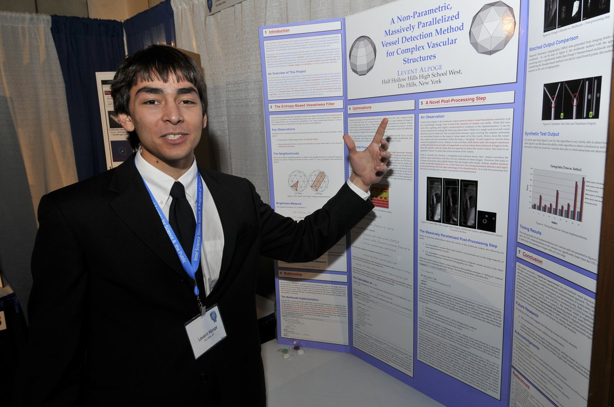

新闻 · 2026-11-21 12:00
黎曼猜想真被 Claude 证明了？Anthropic 数学家仅发布 Lean 代码，陶哲轩称验证仍需时间
Anthropic数学家莱文特·阿尔珀格宣称与AI Claude合作证明了黎曼猜想及广义黎曼猜想，发布约1700万行Lean代码，未公开完整25万页证明。陶哲轩称初步分析显示证明动用现代数学工具，验证需时；Lean虽可机械验证逻辑，但无法保证语义等价；克雷研究所不接受代码直接投稿，奖金需经期刊发表与两年验证。

来源与核验
单一信源报道，未交叉核实